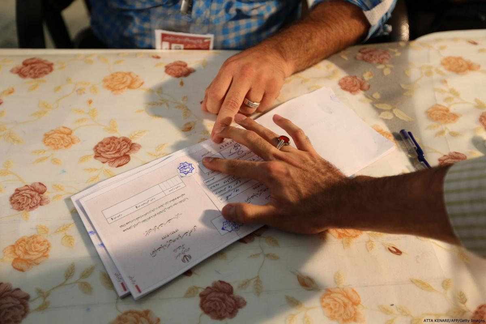

محمدرضا سرداری، نویسنده و کارشناس پیشین وزارت کشور
در بخش نخست این مقاله، اشاره کوتاهی به تاریخچه مطالبات برای تاسیس یک کمیسیون مستقل انتخاباتی و ضرورتهای آن صورت گرفت. در این بخش تلاش میشود تا با در نظر داشتن ظرفیتهای حقوقی نظام جمهوری اسلامی به این پرسش پاسخ داده شود که آیا امکان تاسیس چنین نهادی بر اساس ظرفیتهایی که بدان اشاره خواهد شد وجود دارد یا خیر؟

پیش از ورود به این بحث، لازم است مختصرا به رابطه چهار نوع انتخابات مجلس شورا، ریاست جمهوری، مجلس خبرگان و شوراهای شهر و روستا با مولفههایی چون نظام، دولت و جامعه مدنی در ایران اشاره شود. در یک نگاه کلی، انتخابات در ایران با هر سه مولفه نظام، دولت و جامعه مدنی درگیر است. نظام جمهوری اسلامی از سه قوه اجرایی، تقنینی و قضایی تشکیل شده است که در راس آن نهادی چون رهبری قرار دارد.
از این منظر، از بعد نظارتی شورای نگهبان به عنوان بخشی از قوه مقننه اختیارات نظارتی تامی در حوزه انتخابات، به استثنای انتخابات شوراها دارد. از سوی دیگر ۶ عضو شورای نگهبان مستقیما از سوی رهبر به مدت پنج سال انتخاب و ۶ عضو دیگر نیز در تعامل قوه قضائیه با مجلس برگزیده میشوند. بنابراین میتوان گفت رهبری، مجلس و قوه قضائیه در ایران به ترتیب در چینش افرادی که در پروسه نظارتی انتخابات ایران را مدیریت میکنند نقش دارند که در این میان نقش دستگاه رهبری نظام برجسته تر است.
اما دولت بیشترین نقش را در اجرای انتخابات دارد. وزارت کشور و کلیه استانداران و فرمانداران و بخشداران طبق قانون مسئول برگزاری انتخابات شناخته میشوند. پروسه انتخابات در ستادی که ریاست آن برعهده وزیر کشور یا معاون آن است مدیریت و نتیجه انتخابات در سراسر کشور در این ستاد تجمیع و اعلام میشود. بنابراین اموراتی از ثبت نام نامزدها تا چاپ برگ رای و نهایتا اعلام نتیجه از سوی دولت اجرا میگردد.
اما در این میان جامعه مدنی چه نقشی ایفاء میکند؟ اگر جامعه مدنی را به مفهوم سازمانها و یا اشخاص مستقل از نظام و دولت در نظر بگیریم، ناچیزترین نقش در انتخابات بر عهده جامعه مدنی است. به طور نمونه در انتخابات ریاست جمهوری، از اشخاص مستقل به عنوان معتمدین محلی صرفا در روز رایگیری و برای جمع آوری آراء و سپس شمارش آن استفاده میشود. صرفا در انتخابات مجلس شورا و شورای شهر است که هیات اجرایی در فرایند بررسی صلاحیت نامزدان نیز نقش دارد اما این نقش نیز قائم به دولت و نظام است. یعنی معتمدین محلی عضو هیاتی هستند که ریاست آن بر عهده فرماندار است. در واقع حرف آخر را دولت در اجرا و شورای نگهبان در نظارت خواهد زد.
برای این ادعا دو دلیل میتوان ارائه کرد. دلیل نخست اختیارات قانونی معتمدین در انتخابات است و دلیل دیگر اختیارات مشترک دولت و شورای نگهبان به عنوان دو قوه در یک نظام برای انتخاب معتمدین محلی است. بدین معنی که فرآیند انتخاب معتمدین محلی مستقل و دموکراتیک نیست و این معتمدین در انتخابات ایران معمولا کسانی هستند که با نظر مشترک دولت و شورای نگهبان برگزیده شدهاند. از این رو در برخی موارد حتی افرادی به عنوان معتمد برگزیده شده اند که مشاغل دولتی داشته اند یا از کارکنان نهادهای وابسته به رهبری هستند که این امر خود نشانهای دیگر از حاکمیتی بودن انتخابات در ایران است. نمونه آن انتخاب افرادی چون سید احمد زرگر دبیر ستاد امر به معروف و نهی از منکر کشور، سید علی ایزدیخواه مدیرکل آموزش و پرورش شهر تهران و خانم خزعلی عضو شورای عالی انقلاب فرهنگی به عنوان معتمدین شهر تهران برای انتخابات مجلس نهم است.
از سوی دیگر در قانون انتخابات مجلس، ریاست جمهوری و شوراها محدودیت هایی از جمله تبعیت از ولایت مطلقه فقیه و عدم عضویت در گروههای غیرقانونی شرط انتخاب معتمدین محلی است.
نکته حائز اهمیت این جاست که همین معتمدین محلی صرفا در پروسه اجرایی نقش دارند و هیچگاه در پروسه نظارت به کار گرفته نمیشوند. در واقع قانون در تعیین اعضای هیاتهای نظارت شورای نگهبان سخنی از معتمدین محلی به میان نیاورده است. در قوانین نظارت شورای نگهبان بر انتخابات مجلس و ریاست جمهوری، شورای نگهبان مختار است ناظران خود را مستقیما انتخاب کند و نیازی به تشریفاتی که هیاتهای اجرایی برای شکل گیری دارند نیست.
اما در این میان تنها امکانی برای نظارت مستقل از حاکمیت از نظر قانونی وجود دارد، نظارت نمایندگان کاندیداها بر فرآیند انتخابات در روز رای گیری و هنگام شمارش آراء است.
در انتخابات ریاست جمهوری این امکان بر اساس ماده واحده ای که در سیام مرداد سال ۱۳۷۹ به تصویب مجلس رسید ایجاد شده است و نامزدهای ریاست جمهوری را قادر میسازد تا به تنهایی و یا چند نامزد مشترکاً در هریک از شعب اخذ رای،اماکن استقرار دستگاه شمارشگر رایانهای آراء و هیاتهای اجرایی شهرستانها و بخشها یک نفر نماینده داشته باشند.
ماده ۵۵ قانون انتخابات مجلس نیز چنین امکانی را برای نامزدان نمایندگی مجلس ایجاد کرده است. با این تفاوت که به علت تکثر نامزدان انتخابات مجلس محدودیتهایی نیز قائل شده است. به طور مثال در حوزههایی که ۵ نماینده دارد، نامزد مربوطه به ازای هر ۵ صندوق می تواند یک نماینده معرفی کند.
ماده 24 قانون انتخابات شوراها نیز می گوید در حوزههاي انتخابيهاي كه تا ده نفر نامزد انتخاباتي داشته باشد نامزدها ميتوانند به تنهايي يا اشتراك براي هر يك از شعبههاي ثبت نام و اخذ رأي و در حوزههاي انتخابيهاي كه بيش از ده نفر نامزد داشته باشد براي هر پنج شعبه ثبت نام و اخذ رأي يك نفر نماينده جهت حضور در محل شعب اخذ رأي به هيأت اجرائي معرفي نمايند. تنها در انتخابات مجلس خبرگان رهبری این امکان پیشبینی نشده است.
با این حال این نظارت گرچه قانونی است اما فاقد ضمانت اجرا است. یعنی صرفا میتواند مستندی برای نامزدها برای شکایت، در صورت اعتراض به نتیجه انتخابات باشد. اما آیا می توان از چنین ظرفیت قانونی برای تاسیس یک کمیسیون مستقل استفاده کرد؟
بدیهی است که به علت اختیارات تام شورای نگهبان برای نظارت بر انتخابات که از قانون اساسی اقتباس شده است هیچ مرجع مستقلی نمی تواند بدون تغییر قانون اساسی، کمیسیونی را فرض کند که میتواند به عنوان یک نهاد تصمیم گیر در روند انتخابات عمل کند.
اما این امکان از نظر قانونی وجود دارد که یک نهاد مستقل از حاکمیت در قالب یک سازمان مردم نهاد بتواند نقش یک نهاد ناظر بر انتخابات را با استفاده از این ظرفیت قانونی ایفا کند. با این فرض که نهاد مذکور پس از تاسیس، با دعوت از شهروندان داوطلب و آموزش آنان در زمینه شیوه نظارت بر انتخابات یک مجموعه حرفهای از اشخاصی که آشنا به فن انتخابات شدهاند را فراهم ساخته و در زمانهای انتخابات به نامزدها برای معرفی به وزارت کشور پیشنهاد کند. چنین سازمانی همچنین میتواند از امکانات تجمیع و شمارش آراء نیز استفاده کند و در نتیجه خدمات خویش را با جدیدترین روش های موجود در جهان ارائه نماید.
تا اینجا به بحث نظارت بر انتخابات پرداخته شد و چنین نتیجه گرفتیم مادام که قانون اساسی تغییر نکرده است از منظر حقوقی امکان تاسیس کمسیونی مستقل برای نظارت انتخابات وجود ندارد جز آن که یک یا چند سازمان مردم نهاد بیطرف با بهرهگیری از ظرفیت قانونی نظارت نمایندگان نامزدها تاسیس شود و بتواند درباره روند برگزاری انتخابات در ایران به نامزدها و مردم اطلاع رسانی کند. اما آیا چنین منعی برای اجرای انتخابات نیز وجود دارد؟ به عبارتی بهتر آیا امکان تاسیس یک کمیسیون مستقل از حاکمیت برای اجرای انتخابات سراسری در کشور نیز از نظر حقوقی متصور است؟
قانون اساسی بر خلاف مسئله نظارت بر انتخابات که مستقیما آن را بر عهده شورای نگهبان قرار داده است، اجرای انتخابات را به قانون عادی واگذار کرده است. در واقع این مجلس است که میتواند دراین باره که چه دستگاهی باید انتخابات را برگزار کند تصمیمگیری کند. در حال حاضر بر اساس ماده ۲۵ قانون انتخابات مجلس، وزارت كشور مأمور اجراي انتخابات مجلس و مسئول حسن جريان انتخابات است. چنین موادی در قوانین مربوط به انتخابات ریاست جمهوری، شوراها و آیین نامه داخلی مجلس خبرگان رهبری نیز وجود دارد.
در واقع می توان گفت از قانون اساسی هیچ توصیه یا محدودیتی برای قانون گذار نگذاشته و کیفیت برگزاری انتخابات را به قانون واگذار کرده است. بنابراین روی کاغذ میتوان گفت که در صورت تصمیم نمایندگان مجلس می توان اجرای انتخابات را به نهادی کمیسیونی مستقل واگذار کرد.
پیش از برگزاری انتخابات ریاست جمهوری دوره یازدهم طرحی با عنوان قانون نظام جامع انتخابات به تصویب مجمع تشخیص مصلحت نظام رسید که از آن به عنوان کمیسیون ملی انتخابات یاد می شود. در این طرح قرار است به جای وزارت کشور، ترکیبی از وزیر کشور و وزیر اطلاعات از طرف دولت، رئیس دیوان محاسبات کشور و یک نفر دیگر به انتخاب مجلس به اتفاق دادستان کل کشور و رئیس سازمان بازرسی کل کشور از طرف قوه قضاییه به عنوان مجریان انتخابات قرار گیرند. یک نفر از اعضای حقیقی مجمع تشخیص مصلحت نظام، رئیس شورای عالی استانها و رئیس سازمان صداوسیما و یک نفر نیز از اعضای شورای نگهبان در این کمیسیون حضور خواهند داشت که البته عضو پیشنهادی شورای نگهبان از آنجا که این شورا به عنوان یک نهاد تصویب شده در قانون اساسی عمل میکند بدون حق رای در کمیسیون ملی انتخابات حضور خواهد داشت.
اما این کمیسیون هرگز نمیتواند یک کمیسیون ملی باشد. زیرا در این کمیسیون نیز به جامعه مدنی و افراد مستقل و بیطرف نقشی داده نشده و صرفا دامنه شخصیتها و نهادهای حکومتی برای دخالت در امر انتخابات افزایش یافته است.
در یک نتیجهگیری کلی باید گفت، جامعه مدنی ایران علیرغم تلاش های زیادی که برای داشتن انتخابات آزاد و سالم صورت داده است، هنوز تا استقرار یک کمیسیون مستقل انتخاباتی به معنایی که در جهان از آن یاد میشود فاصله دارد. شاید در شرایط موجود و تغییر مختصری که در ترکیب دولت مستقر صورت گرفته است بتوان امیدوار بود که با ایجاد نهادهای مستقل و بهرهگیری از برخی ظرفیتهای قانونی نقش اجرایی و نظارتی جامعه مدنی را در انتخابات تقویت کرد.